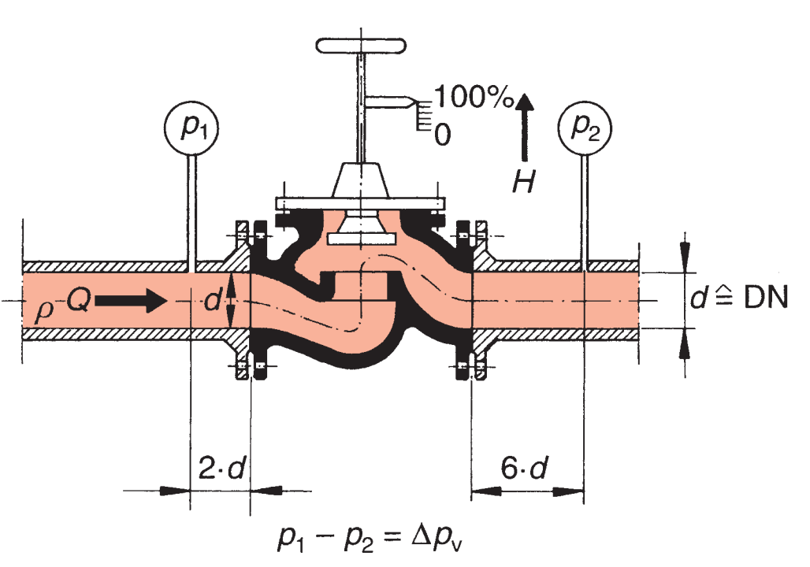
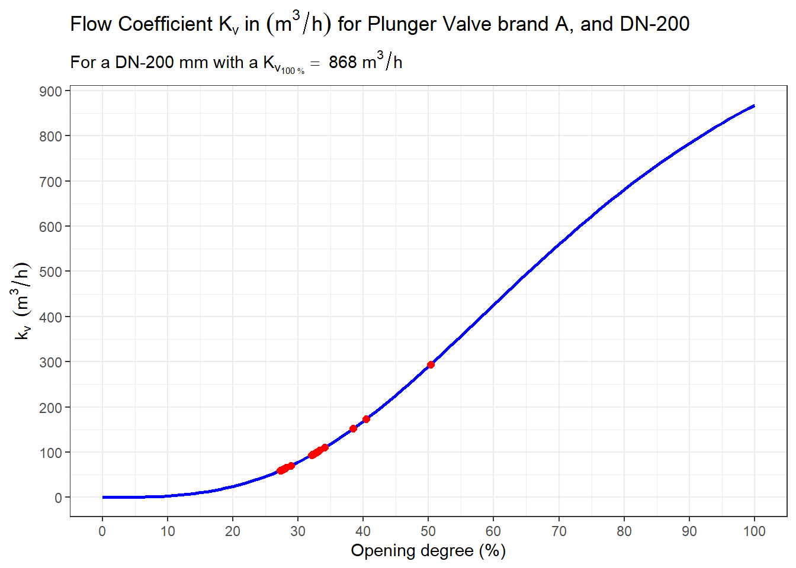
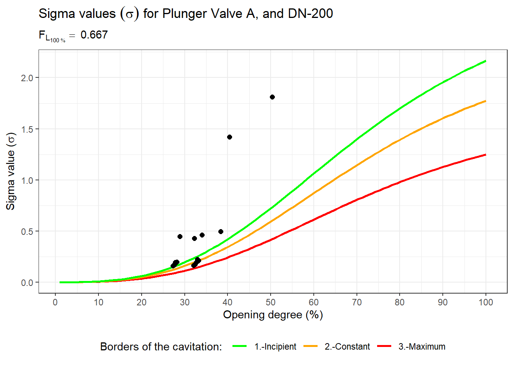
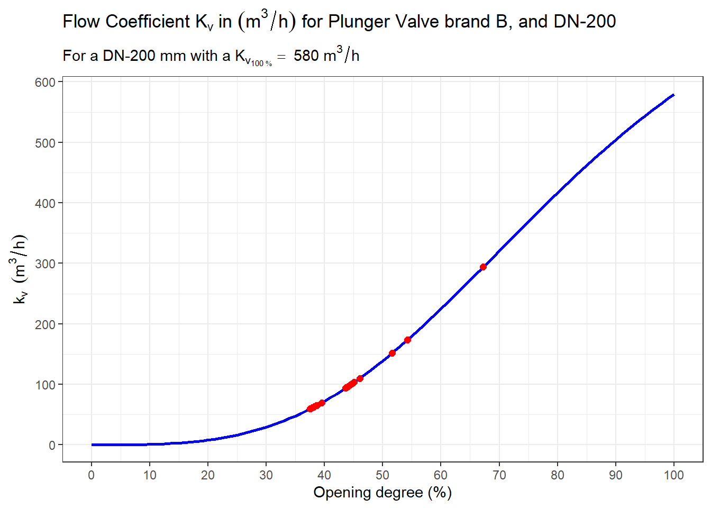
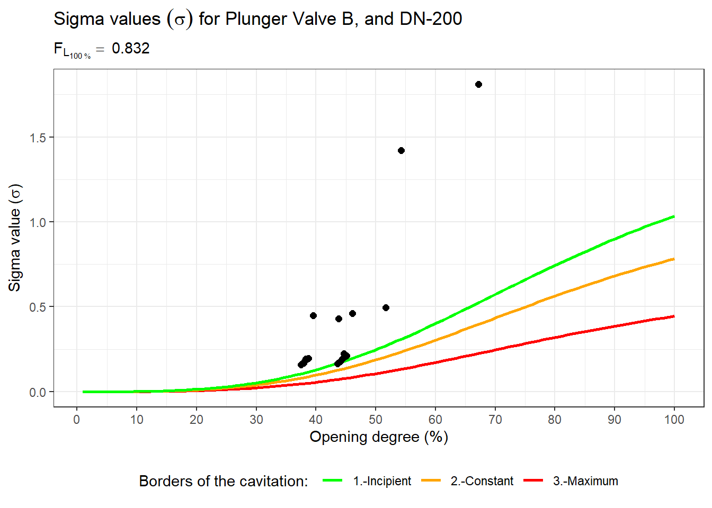
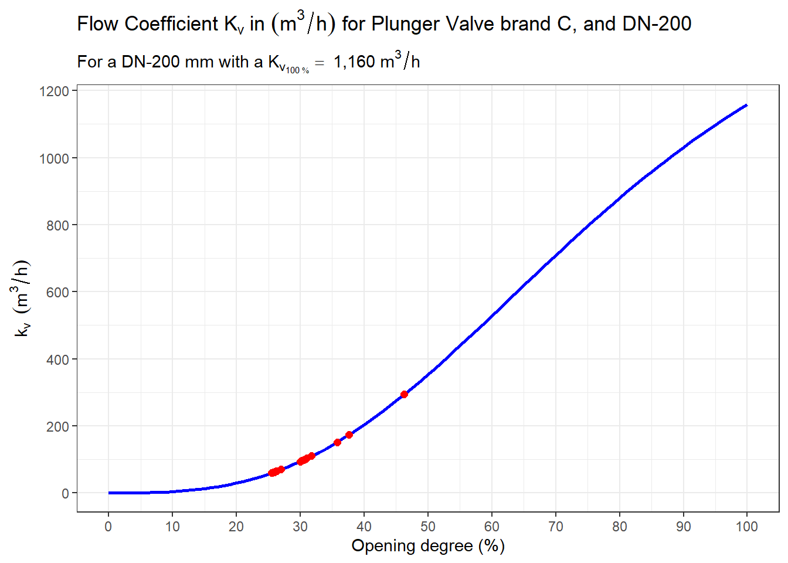
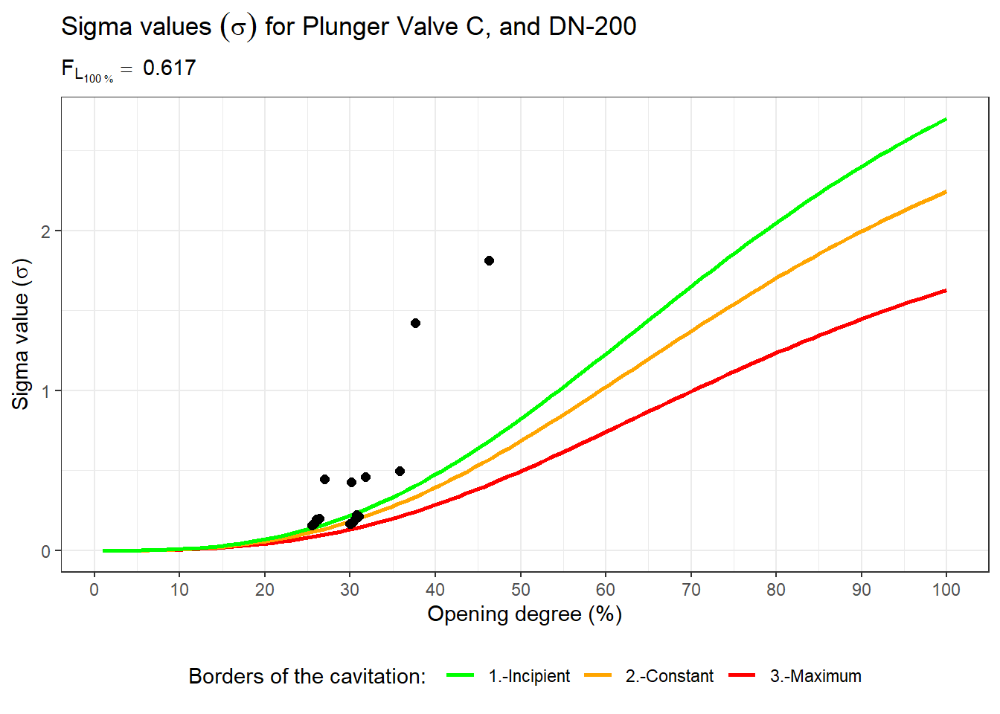

Example: Flow coefficient and cavitation value
Sizing sample
These blog notes provide a simplified procedure for sizing control valves at standard service conditions. The data required to size a valve, such as nominal size, gauge pressures, and flow rates, are actual values of a project.
Initially, I would like to make a first approximation to the selection process of the control valve. Later, in other blogs, I will analyze the different cases.

Flowchart of the valve selection process.
flowchart TD
A[Hydraulic Model] --> B(1. CV \n data operation)
A --> E
B --> C(2. Select min. Kv \n that the CV must supply)
C--> H
E[Valve DN, PN] --> F[(DB Parameters \n of Control Valves)]
F --> H{3. Select CVs with \n Kvs > 1.3* Min.Kvs}
H-.NO.-> A
H--YES --> I(4. Calc. Kv/Kvs and \n valve position for all \n data operation and Types of valves.)
I --> J(5. Calculate the Cavitation and non-cavitation \n regime for every Operation condition)
J --> K(6. Define criteria for valve selection: \n A. General Criteria \n B. System or project-dependent criteria )
K --> L(Select valve.)
- CV: Control Valve
- Kv: Flow coefficient
- Kvs: Maximum flow coefficient
- Kv/Kvs : relative flow coefficient
First step: Collection of the operations data for the control valve.
Medium: Raw Water.
Medium Temperature: 15 \(°C\).
Localization of the valve: 1780 meters above sea level.
Valve Diameter: 200 \(mm\)
Diameter Upstream Pipe 200 \(mm\)
Diameter Downstream Pipe 200 \(mm\)
Relative density 1.01
| Operations Data | |||||||||
| Plus Calculated Data | |||||||||
| Supplied data | Calculated Data | ||||||||
|---|---|---|---|---|---|---|---|---|---|
| P1 (bar) |
P2 (bar) |
ΔP (bar) |
Flow (m3/h) |
Kv (m3/h) |
ζ (-) |
Vel. (m/s) |
σ1 (-) |
σ2 (-) |
|
| Max.Condition | |||||||||
| 01.max | 4.44 | 2.62 | 1.82 | 396 | 1 293.97 | 29.56 | 3.50 | 1.87 | 1.81 |
| 02.max | 18.26 | 5.24 | 13.02 | 396 | 110.02 | 211.04 | 3.50 | 0.46 | 0.46 |
| 03.max | 9.46 | 2.62 | 6.84 | 396 | 151.81 | 110.85 | 3.50 | 0.50 | 0.49 |
| 04.max | 20.22 | 2.19 | 18.02 | 396 | 93.52 | 292.13 | 3.50 | 0.17 | 0.17 |
| 05.max | 19.90 | 2.19 | 17.71 | 396 | 94.34 | 287.07 | 3.50 | 0.17 | 0.17 |
| 06.max | 19.13 | 2.19 | 16.94 | 396 | 96.46 | 274.57 | 3.50 | 0.18 | 0.18 |
| 07.max | 18.53 | 2.35 | 16.19 | 396 | 98.68 | 262.34 | 3.50 | 0.19 | 0.19 |
| 08.max | 17.44 | 2.35 | 15.09 | 396 | 102.20 | 244.59 | 3.50 | 0.21 | 0.21 |
| 09.max | 17.15 | 2.35 | 14.80 | 396 | 103.20 | 239.88 | 3.50 | 0.21 | 0.21 |
| 10.max | 18.31 | 2.72 | 15.60 | 396 | 100.53 | 252.76 | 3.50 | 0.23 | 0.22 |
| Min.Condition | |||||||||
| 01.min | 4.37 | 2.25 | 2.12 | 252 | 173.56 | 84.80 | 2.23 | 1.44 | 1.42 |
| 02.min | 18.19 | 5.08 | 13.12 | 252 | 69.76 | 524.91 | 2.23 | 0.45 | 0.45 |
| 03.min | 9.34 | 2.25 | 7.09 | 252 | 94.90 | 283.67 | 2.23 | 0.43 | 0.43 |
| 04.min | 20.18 | 2.08 | 18.10 | 252 | 59.38 | 724.53 | 2.23 | 0.16 | 0.16 |
| 05.min | 19.87 | 2.08 | 17.79 | 252 | 59.90 | 712.05 | 2.23 | 0.16 | 0.16 |
| 06.min | 19.10 | 2.08 | 17.02 | 252 | 61.24 | 681.11 | 2.23 | 0.17 | 0.17 |
| 07.min | 18.47 | 2.15 | 16.32 | 252 | 62.54 | 653.22 | 2.23 | 0.18 | 0.18 |
| 08.min | 17.37 | 2.15 | 15.22 | 252 | 64.75 | 609.27 | 2.23 | 0.19 | 0.19 |
| 09.min | 17.08 | 2.15 | 14.93 | 252 | 65.38 | 597.63 | 2.23 | 0.20 | 0.20 |
| 10.min | 18.30 | 2.29 | 16.01 | 252 | 63.15 | 640.65 | 2.23 | 0.19 | 0.19 |
| Source: Data of the hydraulic analysis of the system | |||||||||
| 1 The maximum flow coefficient. | |||||||||
Columns definitions:
- \(P_1\): Upstream static (gauge) pressure in \((bar)\);
- \(P_2\): Downstream static (gauge) pressure in \((bar)\);
- \(Flow\): Volumetric flow rate in \((m^3/h)\);
- \((\Delta{P})\): Differential pressure between upstream and downstream pressure taps in \(bar\);
- \(K_v\): Flow coefficient \((m^3/h)\); \(K_v = q \cdot \sqrt{\frac {(\rho / \rho_{0})}{\Delta P}}\)
- \(Vel.\) : Velocity in \(m/s\)
- \(\zeta\): Zeta Value; Required Velocity head loss coefficient;
- \(\sigma_1\): Cavitation index equal to \((P_2 - P_v)/\Delta{P}\) at service conditions;
- \(\sigma_2\): Cavitation index equal to \((P_2 - P_v)/(\Delta{P}+v^2/2g)\) at service conditions.
Second step: select the minimum \(K_v\) required.
- The maximum flow coefficient \(K_v\) required for operation of the control valve is: 293.97 \(m^3/h\).
- The control valve to be selected must meet at least \(1.3\) times the maximum flow coefficient required.
- Therefore the minimum \(K_{vs}\) (full open flow coefficient) of the selected valve must be: 382.17 \(m^3/h\).
Third step: Select the valves plus dissipation element that meet the minimum required flow coefficient.
For this exercise, we will assume the following:
- We only have three valves from 3 different suppliers. Brands “A”, “B” and “C”
- that the required valves should not have anti-cavitation cylinders.
- The parameters for the curve \(K_v/K_{vs}\), the Zeta value \(\zeta_{vs}\) and the Liquid pressure recovery factor \(F_{Ls}\)1 are available.2
- \(K_v/K_{vs} = \frac{d}{1 +\exp(b\cdot(\log{(vp)}-\log{(e)}))}\)
- The cavitation values are established based on the degree of opening, whose function is defined based on the factors of \(K_v/K_{vs}\) and \(F_L\).3
| For Valves DN-200 Millimeter and PN-25 | ||||||
| Brand | Parameter for ( Kv / Kvs ) | ζvs | FLs | Kvs (m3/h) |
||
|---|---|---|---|---|---|---|
| b | d | e | ||||
| A | -2.976 | 1.409 | 74.073 | 3.39 | 0.667 | 868.1 |
| B | -3.299 | 1.561 | 83.924 | 7.60 | 0.832 | 579.8 |
| C | -2.926 | 1.527 | 80.354 | 1.90 | 0.617 | 1,159.6 |
As can be seen in table 2, all the selected valves (Brand A, B, and C) comply with a flow coefficient of a \(K_{vs} \geq\) 293.97 \(m^3/h\) required for the operation.
Fourth and five steps: Calculate the position and cavitation regime for the selected valves for the different operation scenarios.
Results for Brand A Valve
| P1 (bar) |
P2 (bar) |
Flow (m3/h) |
Kv (m3/h) |
Kv/Kvs (%) |
Position (%) |
σ2 (-) |
Cavitation Regime |
|
|---|---|---|---|---|---|---|---|---|
| Max.Condition | ||||||||
| 01.max | 4.44 | 2.62 | 396 | 293.97 | 33.86 | 50.32 | 1.81 | Regime 1: Cavitation free |
| 02.max | 18.26 | 5.24 | 396 | 110.02 | 12.67 | 34.04 | 0.46 | Regime 1: Cavitation free |
| 03.max | 9.46 | 2.62 | 396 | 151.81 | 17.49 | 38.41 | 0.49 | Regime 1: Cavitation free |
| 04.max | 20.22 | 2.19 | 396 | 93.52 | 10.77 | 32.07 | 0.17 | Regime 3: Constant cavitation. |
| 05.max | 19.90 | 2.19 | 396 | 94.34 | 10.87 | 32.17 | 0.17 | Regime 3: Constant cavitation. |
| 06.max | 19.13 | 2.19 | 396 | 96.46 | 11.11 | 32.43 | 0.18 | Regime 3: Constant cavitation. |
| 07.max | 18.53 | 2.35 | 396 | 98.68 | 11.37 | 32.70 | 0.19 | Regime 3: Constant cavitation. |
| 08.max | 17.44 | 2.35 | 396 | 102.20 | 11.77 | 33.12 | 0.21 | Regime 3: Constant cavitation. |
| 09.max | 17.15 | 2.35 | 396 | 103.20 | 11.89 | 33.24 | 0.21 | Regime 2: Incipient cavitation. |
| 10.max | 18.31 | 2.72 | 396 | 100.53 | 11.58 | 32.93 | 0.22 | Regime 2: Incipient cavitation. |
| Min.Condition | ||||||||
| 01.min | 4.37 | 2.25 | 252 | 173.56 | 19.99 | 40.46 | 1.42 | Regime 1: Cavitation free |
| 02.min | 18.19 | 5.08 | 252 | 69.76 | 8.04 | 28.86 | 0.45 | Regime 1: Cavitation free |
| 03.min | 9.34 | 2.25 | 252 | 94.90 | 10.93 | 32.24 | 0.43 | Regime 1: Cavitation free |
| 04.min | 20.18 | 2.08 | 252 | 59.38 | 6.84 | 27.25 | 0.16 | Regime 1: Cavitation free |
| 05.min | 19.87 | 2.08 | 252 | 59.90 | 6.90 | 27.34 | 0.16 | Regime 1: Cavitation free |
| 06.min | 19.10 | 2.08 | 252 | 61.24 | 7.05 | 27.55 | 0.17 | Regime 1: Cavitation free |
| 07.min | 18.47 | 2.15 | 252 | 62.54 | 7.20 | 27.76 | 0.18 | Regime 1: Cavitation free |
| 08.min | 17.37 | 2.15 | 252 | 64.75 | 7.46 | 28.10 | 0.19 | Regime 1: Cavitation free |
| 09.min | 17.08 | 2.15 | 252 | 65.38 | 7.53 | 28.20 | 0.20 | Regime 1: Cavitation free |
| 10.min | 18.30 | 2.29 | 252 | 63.15 | 7.27 | 27.85 | 0.19 | Regime 1: Cavitation free |


Results for Brand B Valve
| P1 (bar) |
P2 (bar) |
Flow (m3/h) |
Kv (m3/h) |
Kv/Kvs (%) |
Position (%) |
σ2 (-) |
Cavitation Regime |
|
|---|---|---|---|---|---|---|---|---|
| Max.Condition | ||||||||
| 01.max | 4.44 | 2.62 | 396 | 293.97 | 50.70 | 67.23 | 1.81 | Regime 1: Cavitation free |
| 02.max | 18.26 | 5.24 | 396 | 110.02 | 18.98 | 46.08 | 0.46 | Regime 1: Cavitation free |
| 03.max | 9.46 | 2.62 | 396 | 151.81 | 26.18 | 51.64 | 0.49 | Regime 1: Cavitation free |
| 04.max | 20.22 | 2.19 | 396 | 93.52 | 16.13 | 43.59 | 0.17 | Regime 2: Incipient cavitation. |
| 05.max | 19.90 | 2.19 | 396 | 94.34 | 16.27 | 43.72 | 0.17 | Regime 2: Incipient cavitation. |
| 06.max | 19.13 | 2.19 | 396 | 96.46 | 16.64 | 44.05 | 0.18 | Regime 1: Cavitation free |
| 07.max | 18.53 | 2.35 | 396 | 98.68 | 17.02 | 44.40 | 0.19 | Regime 1: Cavitation free |
| 08.max | 17.44 | 2.35 | 396 | 102.20 | 17.63 | 44.93 | 0.21 | Regime 1: Cavitation free |
| 09.max | 17.15 | 2.35 | 396 | 103.20 | 17.80 | 45.08 | 0.21 | Regime 1: Cavitation free |
| 10.max | 18.31 | 2.72 | 396 | 100.53 | 17.34 | 44.68 | 0.22 | Regime 1: Cavitation free |
| Min.Condition | ||||||||
| 01.min | 4.37 | 2.25 | 252 | 173.56 | 29.94 | 54.26 | 1.42 | Regime 1: Cavitation free |
| 02.min | 18.19 | 5.08 | 252 | 69.76 | 12.03 | 39.54 | 0.45 | Regime 1: Cavitation free |
| 03.min | 9.34 | 2.25 | 252 | 94.90 | 16.37 | 43.81 | 0.43 | Regime 1: Cavitation free |
| 04.min | 20.18 | 2.08 | 252 | 59.38 | 10.24 | 37.52 | 0.16 | Regime 1: Cavitation free |
| 05.min | 19.87 | 2.08 | 252 | 59.90 | 10.33 | 37.62 | 0.16 | Regime 1: Cavitation free |
| 06.min | 19.10 | 2.08 | 252 | 61.24 | 10.56 | 37.89 | 0.17 | Regime 1: Cavitation free |
| 07.min | 18.47 | 2.15 | 252 | 62.54 | 10.79 | 38.15 | 0.18 | Regime 1: Cavitation free |
| 08.min | 17.37 | 2.15 | 252 | 64.75 | 11.17 | 38.59 | 0.19 | Regime 1: Cavitation free |
| 09.min | 17.08 | 2.15 | 252 | 65.38 | 11.28 | 38.71 | 0.20 | Regime 1: Cavitation free |
| 10.min | 18.30 | 2.29 | 252 | 63.15 | 10.89 | 38.27 | 0.19 | Regime 1: Cavitation free |


Results for Brand C Valve
| P1 (bar) |
P2 (bar) |
Flow (m3/h) |
Kv (m3/h) |
Kv/Kvs (%) |
Position (%) |
σ2 (-) |
Cavitation Regime |
|
|---|---|---|---|---|---|---|---|---|
| Max.Condition | ||||||||
| 01.max | 4.44 | 2.62 | 396 | 293.97 | 25.35 | 46.28 | 1.81 | Regime 1: Cavitation free |
| 02.max | 18.26 | 5.24 | 396 | 110.02 | 9.49 | 31.78 | 0.46 | Regime 1: Cavitation free |
| 03.max | 9.46 | 2.62 | 396 | 151.81 | 13.09 | 35.79 | 0.49 | Regime 1: Cavitation free |
| 04.max | 20.22 | 2.19 | 396 | 93.52 | 8.06 | 29.96 | 0.17 | Regime 3: Constant cavitation. |
| 05.max | 19.90 | 2.19 | 396 | 94.34 | 8.14 | 30.05 | 0.17 | Regime 3: Constant cavitation. |
| 06.max | 19.13 | 2.19 | 396 | 96.46 | 8.32 | 30.30 | 0.18 | Regime 3: Constant cavitation. |
| 07.max | 18.53 | 2.35 | 396 | 98.68 | 8.51 | 30.55 | 0.19 | Regime 2: Incipient cavitation. |
| 08.max | 17.44 | 2.35 | 396 | 102.20 | 8.81 | 30.94 | 0.21 | Regime 2: Incipient cavitation. |
| 09.max | 17.15 | 2.35 | 396 | 103.20 | 8.90 | 31.05 | 0.21 | Regime 2: Incipient cavitation. |
| 10.max | 18.31 | 2.72 | 396 | 100.53 | 8.67 | 30.75 | 0.22 | Regime 2: Incipient cavitation. |
| Min.Condition | ||||||||
| 01.min | 4.37 | 2.25 | 252 | 173.56 | 14.97 | 37.64 | 1.42 | Regime 1: Cavitation free |
| 02.min | 18.19 | 5.08 | 252 | 69.76 | 6.02 | 26.98 | 0.45 | Regime 1: Cavitation free |
| 03.min | 9.34 | 2.25 | 252 | 94.90 | 8.18 | 30.12 | 0.43 | Regime 1: Cavitation free |
| 04.min | 20.18 | 2.08 | 252 | 59.38 | 5.12 | 25.48 | 0.16 | Regime 1: Cavitation free |
| 05.min | 19.87 | 2.08 | 252 | 59.90 | 5.17 | 25.56 | 0.16 | Regime 1: Cavitation free |
| 06.min | 19.10 | 2.08 | 252 | 61.24 | 5.28 | 25.76 | 0.17 | Regime 1: Cavitation free |
| 07.min | 18.47 | 2.15 | 252 | 62.54 | 5.39 | 25.95 | 0.18 | Regime 1: Cavitation free |
| 08.min | 17.37 | 2.15 | 252 | 64.75 | 5.58 | 26.27 | 0.19 | Regime 1: Cavitation free |
| 09.min | 17.08 | 2.15 | 252 | 65.38 | 5.64 | 26.36 | 0.20 | Regime 1: Cavitation free |
| 10.min | 18.30 | 2.29 | 252 | 63.15 | 5.45 | 26.04 | 0.19 | Regime 1: Cavitation free |


Sixth step: Define selection criteria and valve selection:
Criteria
- General Criteria for the inherent characteristic of valve:
- Flow Coefficient Range: The Flow Coefficient Range is the maximum and minimum flow coefficient ratio. \(k_{v_{min.}} \iff k_{v_{max.}}\).
- Controllability Range: The Controllability Range is the range between the maximum and minimum position of the valve \(PV_{min.} \iff PV_{max.}\)
- Operation Ratio: The Operating Ratio is the ratio of the Flow Coefficient Range to the Operation Ratio minus one. The optimal value of the Operating Ratio is Zero; an Operating Ratio of Zero means that a 1% valve opening will increase the flow coefficient by \(1\%\).
\[ Ratio =\left| \frac{(k_{v_{max.}} - k_{v_{min.}})}{(PV_{max.}- PV_{min.})} - 1 \right| \]
- System (installed characteristic) and project-dependent criteria:
- Frequency and time with which the valve is in any of the cavitation states.
- Importance of the valve.
- The reliability of the information provided/collected.
- The safety factors that were included in the hydraulic calculation.
Selection
| Brand | Kv in m3/h | Position in % | Cav. Regime | Op.Radio | ||||||
|---|---|---|---|---|---|---|---|---|---|---|
| Min. | Max. | ΔKv | Min. | Max. | ΔPos. | Min. | Max. | Mean | ||
| A | 59.38 | 293.97 | 234.59 | 27.0% | 50.0% | 23.0% | 1 | 3 | 1.6 | 9.17 |
| B | 59.38 | 293.97 | 234.59 | 38.0% | 67.0% | 30.0% | 1 | 2 | 1.1 | 6.90 |
| C | 59.38 | 293.97 | 234.59 | 25.0% | 46.0% | 21.0% | 1 | 3 | 1.5 | 10.27 |
In this example, we will base the selection on the inherent characteristics of the valve. The selection is clear for Brand valve B since it has the lowest average cavitation regime and the most inferior radio operations.
References
- Wagner, Walter. Regel- und Sicherheitsarmaturen. 1. Aufl. dieser Ausg, Vogel, 2008.
- ANSI/ISA, editor. ANSI/ISA-75.01.01-2007, Flow Equations for Sizing Control Valves. ISA, 2007.
- British Standard, editor. BS EN 60534-1:2005. Control Valve Terminology and General Considerations. 2005.
- ANSI/ISA, editor. ANSI/ISA-RP75.21, Process Data Presentation for Control Valves. Instrument Society of America, 1996.
- ANSI/ISA, editor. ANSI/ISA–RP75.23–1995, Considerations for Evaluating Control Valve Cavitation. Instrument Society of America, 1995.
- American National Standards Institute, and Instrument Society of America. Flow Equations for Sizing Control Valves: Standard. 1985.
- ANSI/ISA. ANSI/ISA-75.11-1985 (R1996) , Inherent Flow Characteristic and Rangeability of Control Valves. 1985.
Footnotes
Liquid pressure recovery factor of a control valve without attached fittings (ISA-75.01.01-2007: Flow Equations for Sizing Control Valves).↩︎
In the next blogs we will see how these values can be calculated from the documents supplied by the suppliers.↩︎
These parameters are similar to those in reality but adjusted for this Example.↩︎